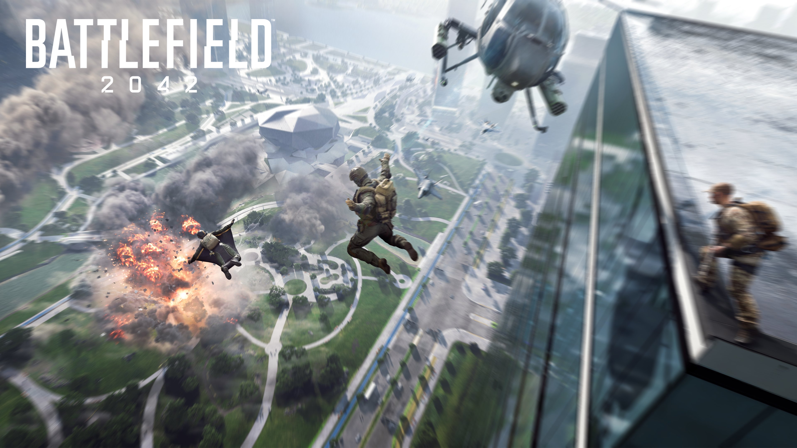

Battlefield 2042
Watching 128 players simultaneously running into Battlefield 2042’s crowded warzones is a great illustration of why bigger isn’t always better. While chaotic gunfights are undoubtedly part of Battlefield’s charm, massive lobbies with that many players eventually turned the series’ signature modes frustrating instead of fun. Thankfully, its tense new Hazard Zone mode provides an interesting strategic alternative, and its crazy-customizable Portal tools are an exciting glimpse at how its future could thrive with a little help from the creativity of the community.
After playing Battlefield 2042 on live servers with the other players who have the Gold Edition, Ultimate Edition, or a subscription to EA Play Pro, I’m not entirely impressed. As the name implies, this latest Battlefield shifts the series into a near future setting full of high-tech gadgets and freedom to play Battlefield the way you want. The goal was to bring back the feeling of Battlefield being a playground again. It also does away with even the meager campaign stories Battlefield V had, featuring no single-player options whatsoever. What it does have is the infantry and vehicle-based shootouts across those huge, beautiful maps Battlefield is generally known for, as well as a few fresh ideas of its own – but not all of the innovations it introduces are for the better.
For instance, at first glance it appears that Battlefield 2042’s roster of 10 playable Specialists are based off of the original four Battlefield classes: Assault, Support, Recon, and Engineer. However, unlike the previous Battlefield games where classes had very specific jobs and skills to define them, 2042’s Specialists’ skills don’t really change a team’s dynamic much. For example, I first decided to go with Support Specialist Maria Falck to act as the team medic. Her Specialty skill arms her with a Syrette Pistol that fires syringes which heal allies and herself, but damage enemies. I initially thought Falck would basically be the only option for someone who likes to play as a medic, but it turns out that anyone can go in as a healer if they equip the medical crate gadget, which lets them throw out the typical Battlefield area-of-effect healing box. And while Falck’s Specialist trait allows her to revive downed teammates to full health, anyone can revive their teammates or provide healing.
2042’s Specialists’ skills don’t really change a team’s dynamic much.
Similarly, anyone can now hold a repair tool, so that’s no longer specific to Engineers, and any Specialist can even equip any gun. There are Specialists who have more unique abilities, like Casper getting an OV-P Recon Drone to scout with or Sundance getting a wingsuit instead of a parachute to cover more distance while dropping into the map – but overall the Specialists’ loadouts don’t feel as distinct as the roles we played in previous Battlefield games. I eventually found myself primarily picking Webster Mackay, whose Specialty is a grappling hook, and equipping the medical crate to get maximum mobility while still being able to play support.
